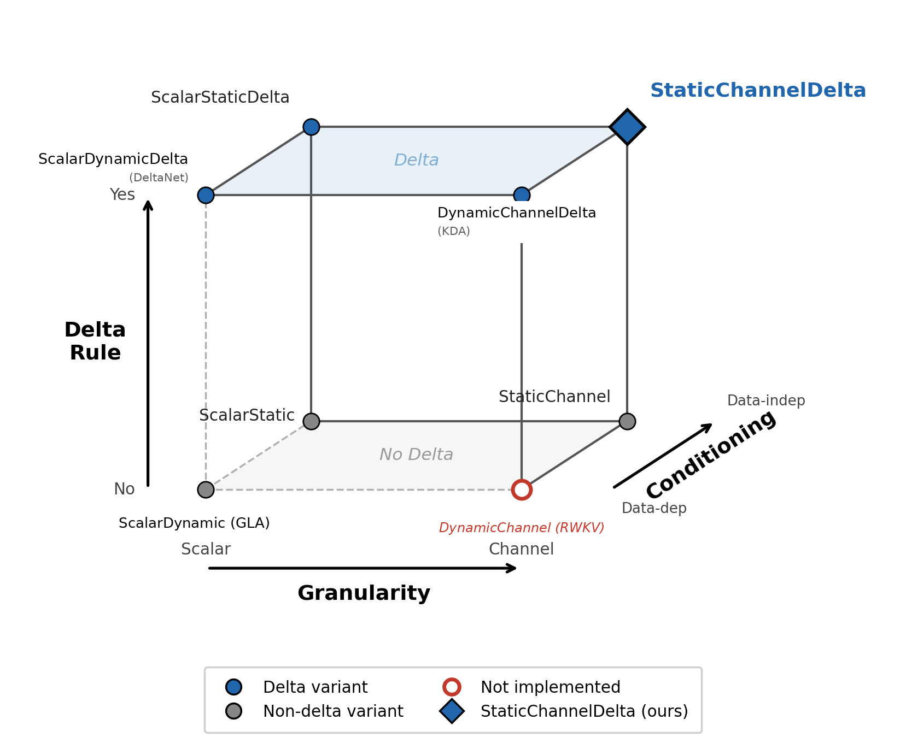
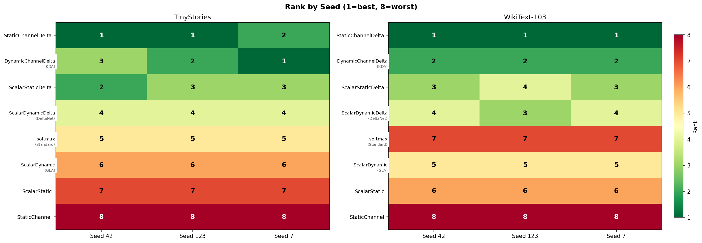
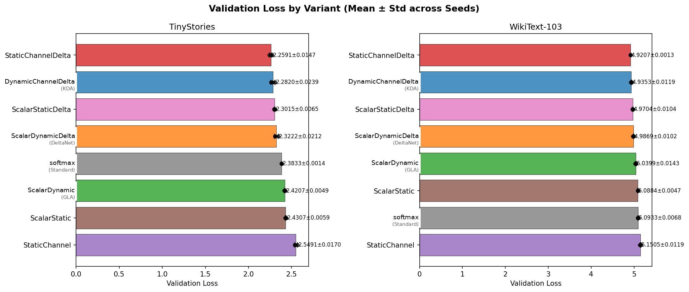
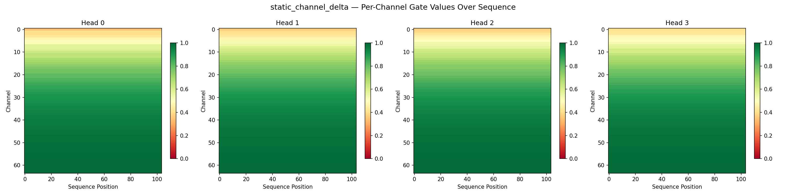
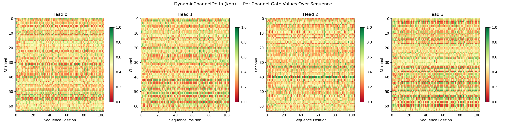
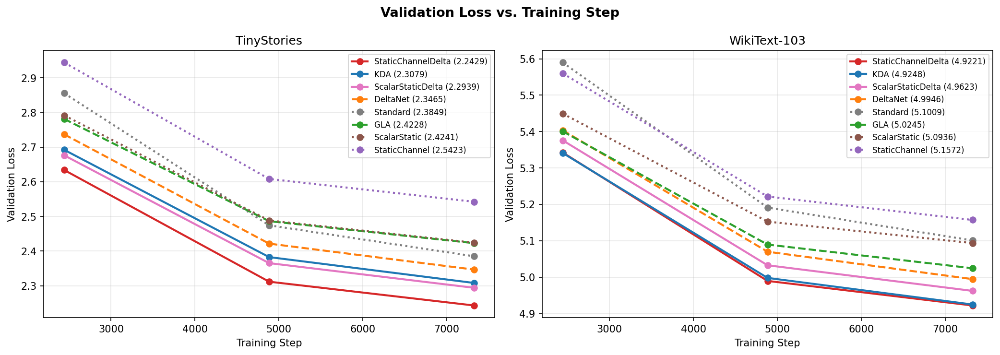
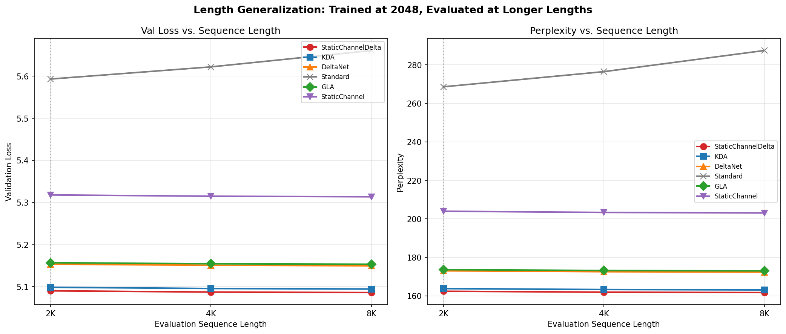

Transactions on Machine Learning Research · 09/2026
Satyajit Das
Independent Researcher · openreview.net/forum?id=FdXB4u27LD
How should a transformer forget?
ot = the attention sublayer's output at position t — one ot per token, per layer, heads concatenated back to . @125M: 12 layers · 12 heads · D = 768, same wiring. This paper changes only the attention box.
Step 1 · softmax attention
exp couples q to every stored ki → keep all keys and values · O(n²)
Step 2 · swap the kernel
replace the kernel with one that factorizes — a replacement, not an approximation (a different model, retrained)
Step 3 · regroup
regroup: the query leaves both sums — the brackets no longer depend on q
Step 4 · keep running sums
running sums: constant-size state, one write + one read per token, O(n) total · S ∈ ℝd×d = 64×64 per head · boxed = the unnormalized form used here
the swap buys cost: no growing KV cache, no per-token slowdown — a fixed 64×64 S and one write + one read per token. the risk is quality — that's what the experiments test
o = attention output (previous slide) · q, k, v = query / key / value · d = key dim · = outer product ("k ⊗ v") · S = the memory · z = the normalizer
G = decay gate (⊙ = entry-wise) · κ, u = the written key / value
1 · Granularity
one scalar per head,
or — a rate per row of S
channel-wise: each row its own γi · scalar: all γi equal · static: fixed after training
2 · Conditioning
data-dependent — per token, 7,077,888 params @125M
or static — fixed after training, 9,216 params
σ = the sigmoid · squashes any score into (0, 1)
3 · The write (delta rule)
blind:
delta: — write only the error
Widrow–Hoff 1960 · into linear attention: Schlag, Irie & Schmidhuber 2021
corrects S at write time, every token — inference too, no gradients involved
static per-channel decay, initialized on (0.368 → 0.996), + corrective writes ·
mental model
MLP weights: remember — a key-value store written by training, read-only at inference
attention: what to read from the past, and how (in-context learning)
S: a key-value scratchpad for the current inference — written token by token, rebuilt from zero each sequence
the wiring is what costs parameters: 768·64 = 49,152 per head × 12 heads × 12 layers = 7,077,888 · the static twin deletes Wg and keeps only the 64 dials: 64 × 12 × 12 = 9,216

Figure 1
scope: fixed-budget comparisons, uniformly simplified delta variants, naive PyTorch loops (softmax 20 ms/step vs SCD 1,762 ms) — interaction structure, not SOTA

Figure 2 · ranks 1–4 are always the four delta-rule variants; no blind writer ever enters the top 4

Figure 3 · mean ± std over 3 seeds; dots = individual seeds
worst delta vs best non-delta:
| setting | gap (nats) |
|---|---|
| 18M · TinyStories | 0.061 |
| 125M · TinyStories | 0.057 |
| 125M · WikiText-103 | 0.072 |
vs softmax at 125M/WT:
0.217
TinyStories · 18M
| scalar | channel | Δ | |
|---|---|---|---|
| blind | 2.4307 | 2.5491 | +0.118 |
| delta | 2.3015 | 2.2591 | −0.042 |
interaction +0.161 ≈ 77% of the delta effect
WikiText-103 · 18M
| scalar | channel | Δ | |
|---|---|---|---|
| blind | 5.0884 | 5.1505 | +0.062 |
| delta | 4.9704 | 4.9207 | −0.050 |
interaction +0.112 · sign-consistent in every seed
many timescales accumulate interference — unless the write corrects it
fine-grained forgetting needs a fine-grained corrector.

Figure 5 · StaticChannelDelta — smooth bands, the init spectrum largely preserved

Figure 7 · DynamicChannelDelta (KDA) — gates recomputed every token
18M, both corpora: StaticChannelDelta 2.2591 / 4.9207 beats DynamicChannelDelta (KDA) 2.2820 / 4.9353 — 9,216 fixed dials vs a ~7M-param gate network

Figure 4 · delta / non-delta separation visible from the first validation checkpoint

Figure 6 · NoPE, trained at 2K: linear variants flat to 8K, softmax degrades (stability check — not long-range retrieval)
legend decoder: ScalarDynamic = GLA · ScalarDynamicDelta = DeltaNet · DynamicChannelDelta = KDA · Standard = softmax
limits: ≤125M, 3 seeds, fixed budget, no retrieval benchmarks · code: pure PyTorch, every seed reported
Thank you
questions?
paper: openreview.net/forum?id=FdXB4u27LD · code: pure PyTorch, every seed reported
the trade: a constant-size S gives up sharp retrieval — corrective (delta) writes win some of it back when keys collide
n = sequence length · d = head dimension (64 here) · the state S is d×d, per head
| softmax attention | linear attention | |
|---|---|---|
| training · compute | O(n²·d) — quadratic in n: the QKᵀ matrix | O(n·d²) recurrent — linear in n but sequential · chunkwise kernels keep it linear AND parallel |
| training · memory | O(n²) attention matrix — FlashAttention cuts it to O(n), but compute stays quadratic | O(d²) state — no n² matrix at all |
| inference · compute/token | O(n·d) — attend to every cached key: grows with context | O(d²) — constant, whatever the context |
| inference · memory | O(n·d) KV cache — grows token by token | O(d²) state — never grows |
softmax: cost scales with how much you've seen · linear: cost is fixed no matter how much you've seen
— paid for by compressing all history into one lossy d×d state